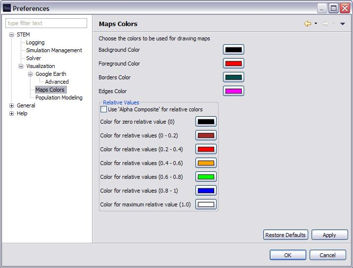

Map View
Map View
- Background ColorThe color of the display outside of a
polygon.
- Foreground ColorThe color of polygons that correspond
to a property with a relative value greater than zero (0.0)
- Zero Relative Value Color The color of polygons that
correspond to a property with a relative value equal to zero (0.0).
- Borders ColorThe color of polygon borders.
- Draw Polygon BordersIf True, then draw the polygon
borders (Default: True)
- Use Logarithmic ScaleIf True, then the intensity of
the color displayed in a polygon that corresponds to a property with a
non-zero relative value will be determined using a logarithmic scale.
(Default: False)
- Gain Factor(Default: 1.0E7)
- GUI Scaling Factor(Default: 8.0)
- Initial X Translation(Default: 0)
- Initial Y Translation(Default: 0)
- Zoom Ruler Scaling Factor
- Initial Scale Selection (0-100)(Default: 50)
